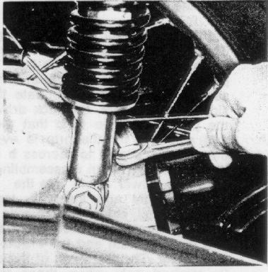
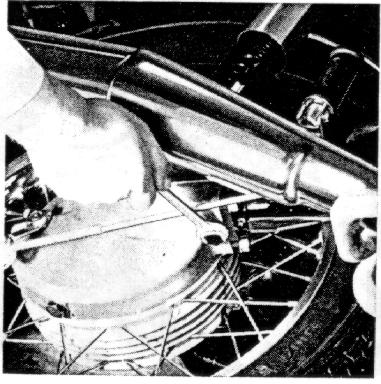

Check oil level every 3000 miles with motorcycle parked
on the center stand.
To do this, remove the filler plug.
Insert a pin into the filler opening deep enough to touch the drive shaft.
Remove and check the oil level,
it should be 0.080 inches above the drive shaft.
Top up with name-brand oil of the same type; if necessary,
retighten filler plug (wrench size 17).
Figure 26
26

Change oil
while oil is at normal operating temperature,
every 6000 miles, but at least once a year.
Unscrew oil drain plug and then
oil filler plug (each use wrench size 17).
After old oil has drained, screw drain plug back in tightly.
Fill with new oil.
Figure 27
27

Amount of oil
approximately 0.27 pints.
Oil level
0.08" over clutch cup with motorcycle parked
Type of oil
name-brand hypoid gear oil SAE 90